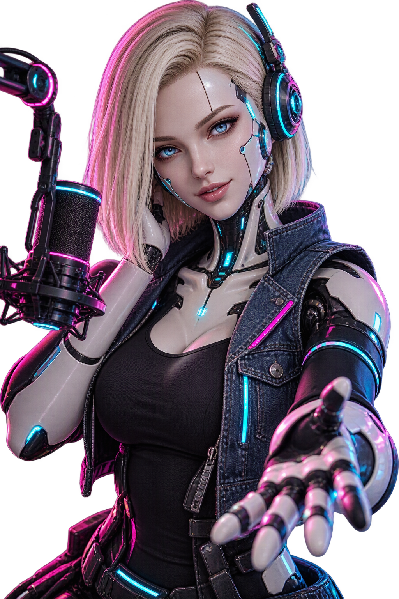

<!-- ===== COLE ESTE BLOCO ONDE A HOST DEVE APARECER (ex.: dentro da tela principal) ===== -->
<section id="cw-host" aria-label="Host virtual da Cyberwave Radio">
  <span class="cw-live">AO VIVO</span>
  <div class="cw-eq" aria-hidden="true"><i></i><i></i><i></i><i></i><i></i><i></i></div>

  <div class="cw-figure">
    
  </div>

  <div class="cw-hud">
    <div class="cw-name">ANDRA-18</div>
    <div class="cw-role">HOST VIRTUAL • CYBERWAVE RADIO</div>
    <p class="cw-caption" id="cw-caption" aria-live="polite"></p>
    <div class="cw-controls">
      <button type="button" id="cw-btn-intro">Apresentar</button>
      <button type="button" id="cw-btn-news">Notícias</button>
      <button type="button" id="cw-btn-stop">Silenciar</button>
    </div>
  </div>
</section>
